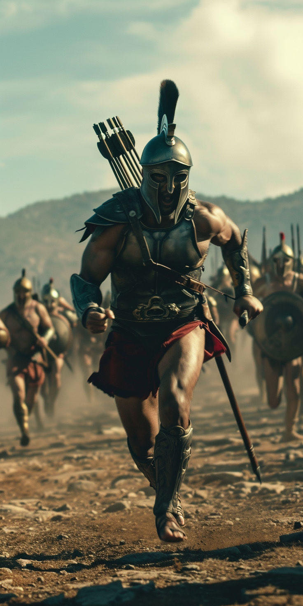
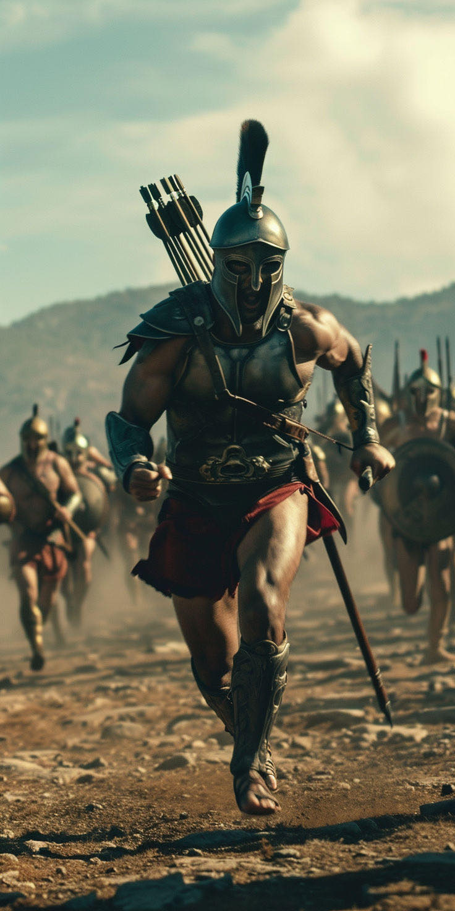

The Lone Warrior

In a realm plagued by darkness and tyranny, there existed a lone warrior whose name was whispered in hushed tones by those who dared to dream of freedom.

He was known simply as "The Lone Warrior." His true name had long been forgotten, buried beneath the weight of his solitary quest.
The Lone Warrior roamed the land, his cloak billowing behind him like a shadow in the wind.


His eyes, sharp as the blade he wielded, carried the burden of countless battles fought in the name of justice. He was a figure of legend, a beacon of hope in a world shrouded in despair.
Many tales were told of his exploits: how he had single-handedly defeated hordes of monsters,
liberated villages from the grip of ruthless warlords, and stood against the forces of darkness when all seemed lost.
But despite his fame, The Lone Warrior remained a mystery, his past veiled in secrecy.

Driven by a sense of duty that burned like a flame within his heart, The Lone Warrior continued his quest, seeking out those who cried out for his aid.
 

Along the way, he encountered friends and allies who shared his vision of a better world. Together, they faced unimaginable dangers, their bond forged in the heat of battle.
But with each victory came new challenges, and The Lone Warrior knew that his journey would never truly end until peace reigned once more.


For every enemy he vanquished, another rose to take its place, their dark ambitions threatening to engulf the land in eternal darkness.
Yet, despite the odds stacked against him, The Lone Warrior refused to falter. His resolve was unbreakable,
his spirit indomitable. For he knew that as long as even a single ember of hope remained, the fires of rebellion would never die.

And so, The Lone Warrior continued to fight, his name becoming a rallying cry for those who dared to defy the darkness.


Though he walked a path fraught with peril, he did so with courage and conviction, knowing that his legacy would endure long after he had passed into legend.
For in the annals of history, there would always be tales of The Lone Warrior, a lone figure standing against the tide of darkness, a symbol of hope in a world consumed by chaos.


And though his journey may have ended, his spirit would live on, a guiding light for all who dared to dream of a better tomorrow.